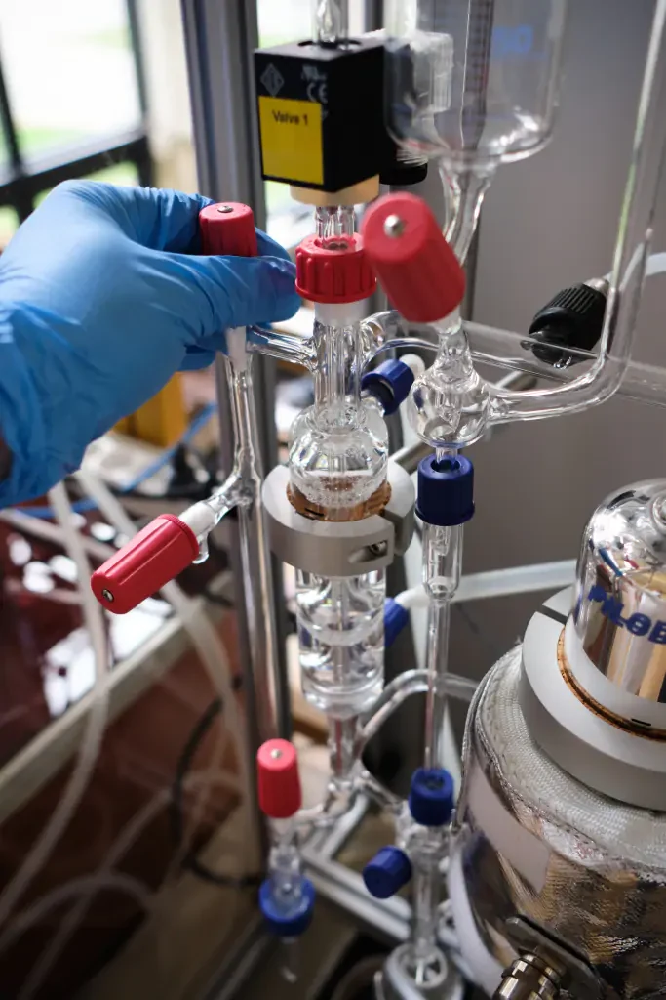
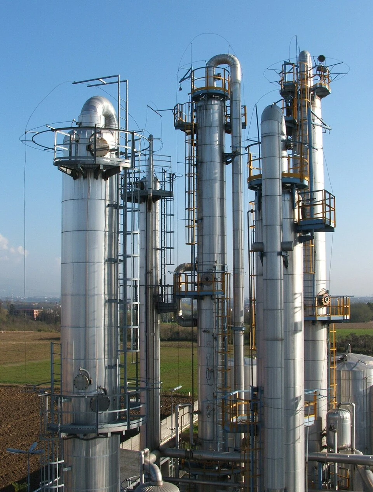

IQYA-2031 · Proyecto de Operaciones Unitarias
Equilibrio de fases y destilación
Introducción al equilibrio líquido-vapor y tipos de destilación.

Contenido de la sesión
- 01Ley de Raoult y desviacionesIdeal vs no ideal, coeficiente de actividad
- 02Diagramas de faseT-x-y, x-y, volatilidad relativa
- 03AzeótroposMínimos, máximos y métodos de ruptura
- 04Modelos termodinámicosWilson, NRTL, UNIQUAC, UNIFAC
- 05Tipos de destilaciónSimple, flash y fraccionada
- 06Selección de tecnologíaCriterios de selección y diseño
Objetivo: Conectar los fundamentos del equilibrio líquido-vapor con la selección de tecnologías de destilación para procesos de separación industrial.

Equipo de destilación diferencial en el Laboratorio de Operaciones Unitarias.
Equilibrio líquido-vapor (ELV)
Constituye la base fundamental para dimensionar cualquier columna de destilación. Permite predecir el comportamiento de las mezclas bajo diferentes condiciones operativas.
Conectamos los conceptos termodinámicos con la selección de tecnologías de separación, construyendo el puente entre las necesidades del sistema y nuestras expectativas.
Equilibrio de fases
Ley de Raoult, desviaciones y diagramas fundamentales.
Diagrama P-x para benceno-tolueno a 80 °C (sistema ideal).
Datos: ec. de Antoine (Poling, Prausnitz & O'Connell, 2001).
Ley de Raoult
Funciona para sistemas cercanos a la idealidad. Asume que las fuerzas intermoleculares entre moléculas iguales y diferentes son equivalentes.
La presión parcial ($P_i$) de cada componente es proporcional a su fracción molar en la fase líquida ($x_i$) y a su presión de vapor pura ($P_i^\star$):
La presión total es la suma de las presiones parciales:
Desviación positiva: etanol(1)-ciclohexano(2) a 40 °C.
Datos experimentales: Scatchard & Raymond, JACS, 1938.
Desviaciones positivas de la ley de Raoult
Ocurre cuando las moléculas de la mezcla tienen menor afinidad entre sí que consigo mismas, aumentando la energía libre de mezcla.
Se introduce el coeficiente de actividad $\gamma_i > 1$:
Consecuencia: Formación de azeótropos mínimos de punto de ebullición, donde la mezcla hierve a temperatura menor que cualquiera de los componentes puros.
Desviación negativa: acetona(1)-cloroformo(2) a 35 °C.
Datos experimentales: Zawidzki, Z. Phys. Chem., 1900.
Desviaciones negativas de la Ley de Raoult
Las moléculas «dispares» interactúan fuertemente mediante fuerzas como puentes de hidrógeno o interacciones dipolo-dipolo.
El coeficiente de actividad $\gamma_i < 1$:
Implicación: Origina azeótropos máximos de punto de ebullición (ej. ácido acético-agua). Reconocer esta tendencia temprano evita sobredimensionar intercambiadores.
Diagrama T-x-y para benceno(1)-tolueno(2) a 1 atm.
Calculado con ec. de Antoine + Ley de Raoult (sistema ideal).
Diagramas $T - x - y$
Representan temperatura vs composición molar a presión fija. Muestran líneas de burbuja ($L \to V$) y rocío ($V \to L$).
Lectura del diagrama T-x-y: regiones de fase y línea de reparto a 95 °C.
Benceno(1)-tolueno(2) a 1 atm. Ec. de Antoine + Raoult.
Lectura del diagrama $T - x - y$
La anchura entre las curvas de burbuja y rocío refleja la «facilidad» de separación: mayor espacio implica mayor diferencia de volatilidad.
- La curva inferior (burbuja) indica la temperatura donde el líquido empieza a vaporizar.
- La curva superior (rocío) indica la temperatura donde el vapor empieza a condensar.
- Entre ambas curvas coexisten líquido y vapor en equilibrio.
Para diseño de destiladores, estas curvas alimentan los métodos de McCabe-Thiele y Ponchon-Savarit.
Diagrama x-y para benceno(1)-tolueno(2) a 1 atm (sistema ideal).
Calculado con ec. de Antoine + Ley de Raoult.
Diagramas $x - y$: la clave para el diseño
Al proyectar un diagrama $T-x-y$ a presión fija obtenemos el plano $x-y$. Cada punto $(x_i, y_i)$ se deriva de la ecuación de Raoult:
Trazar la diagonal ($x = y$) permite visualizar la desviación: cuanto más lejos de la diagonal, mayor la volatilidad relativa y más fácil la separación.
Diagrama x-y para etanol(1)-agua(2) a 1 atm (sistema no ideal).
Datos experimentales: Gmehling et al., DECHEMA Chemistry Data Series.
Diagrama $x - y$ con azeótropo
En sistemas no ideales, se introduce el coeficiente de actividad:
La curva de equilibrio cruza la diagonal en el punto azeotrópico ($x_{\text{EtOH}} = 0{,}894$), donde la separación por destilación simple se vuelve imposible.
En el azeótropo $\alpha_{AB} = 1$: la composición del vapor replica exactamente la del líquido.
Volatilidad relativa
La volatilidad relativa entre dos componentes A (más volátil) y B se define como:
Para un sistema ideal: $\alpha_{AB} = P_A^\star / P_B^\star$
Interpretación práctica
- Si $\alpha_{AB} = 1$, la destilación es impracticable
- Con $\alpha_{AB} > 1{,}1$, se reduce el número de etapas
- $\alpha_{AB} > 2$ suele bastar para destilación sencilla
En mezclas altamente no ideales, $\alpha$ varía con $x$, exigiendo simulaciones segmentadas o métodos diferenciales de diseño.
Azeótropo mínimo: etanol(1)-agua(2) a 1 atm.
Datos experimentales: Gmehling et al., DECHEMA.
Azeótropo de punto de ebullición mínimo
Un azeótropo es un punto donde $\alpha_{AB} = 1$ y la composición del vapor replica la del líquido, imposibilitando más enriquecimiento por destilación simple.
Los azeótropos mínimos hierven a temperatura menor que ambos componentes puros.
- Etanol-agua: $x = 0{,}894$ mol EtOH, 78,15 °C
- Etanol puro hierve a 78,37 °C
- Agua pura hierve a 100 °C
Azeótropo máximo: acetona(1)-cloroformo(2) a 1 atm.
Datos experimentales: Reinders & de Minjer, Rec. Trav. Chim., 1940.
Azeótropo de punto de ebullición máximo
Los azeótropos máximos hierven a temperatura mayor que ambos componentes puros. Son menos comunes.
- Acetona-cloroformo: $x_{\text{acetona}} \approx 0{,}34$, aprox. 64,5 °C
- Acetona pura: 56,05 °C
- Cloroformo puro: 61,15 °C
La desviación negativa ($\gamma < 1$) indica interacciones fuertes (puentes de hidrógeno) que estabilizan la mezcla líquida.
Métodos de ruptura
Destilación extractiva
Se añade un tercer componente (solvente o entrainer) que modifica las volatilidades relativas, formando nuevas interacciones que permiten la separación.
Destilación a presión diferencial
La composición del azeótropo varía con la presión. Operando en dos o más columnas a presiones diferentes se desplaza el azeótropo y se logra la separación.
Tamices moleculares
Materiales porosos que adsorben selectivamente uno de los componentes según su tamaño molecular o polaridad, interrumpiendo la formación del azeótropo.
Modelos termodinámicos
Métodos de cálculo para el equilibrio de fases en sistemas reales.
Métodos de cálculo de equilibrio
Enfoque básico
Ley de Raoult para sistemas ideales o ligeramente no ideales.
Coeficientes de actividad
Modelos Wilson, NRTL, UNIQUAC para sistemas no ideales en fase líquida.
Ecuaciones de estado
Peng-Robinson, Soave-Redlich-Kwong para sistemas a alta presión.
Modelos híbridos
Combinación de ecuaciones de estado con modelos de actividad para sistemas complejos.
La selección del método depende de la naturaleza química, las condiciones de operación y el grado de precisión requerido.
Modelo Wilson
Modelo NRTL
Modelo UNIQUAC
Comparación cualitativa de modelos termodinámicos.
Comparación de modelos
Criterios de selección
La elección del modelo debe considerar: disponibilidad de parámetros, rango de temperatura-presión, presencia de azeótropos y necesidad de extrapolación.
Práctica industrial
Generalmente se pre-seleccionan dos modelos y se verifica su ajuste contra datos experimentales de laboratorio.
Predicción vs correlación
Predicción
- Utiliza parámetros teóricos o group-contribution (UNIFAC)
- Sirve para análisis de viabilidad inicial
- Útil para screening de solventes
- No requiere datos experimentales previos
Correlación
- Ajusta parámetros a datos experimentales
- Utiliza datos de destilación estática o ebulliómetro
- Mandatoria para diseño definitivo
- Mayor precisión en rangos específicos
Estrategia recomendada
1. Predecir con UNIFAC → 2. Seleccionar candidatos → 3. Generar datos experimentales → 4. Correlacionar con NRTL → 5. Validar.
Simuladores comerciales y académicos
Principales softwares
- Aspen Plus: amplia biblioteca de modelos
- ChemCAD: interfaz intuitiva
- ProSim: especializado en destilación
- DWSIM: alternativa de código abierto
Mejores prácticas
- Ingresar unidades consistentes
- Activar reporte de convergencia
- Validar balance global de masa-energía
- Extrapolar con cautela fuera de rango
Flujo de trabajo
- Selección del paquete termodinámico
- Definición del método de cálculo
- Ejecución de flashes isobáricos/adiabáticos
- Análisis de sensibilidad
Tipos de destilación
Simple, flash y fraccionada: selección según el proceso.

Torres de destilación fraccionada en operación continua.
Tipos de destilación
Destilación simple o diferencial
Operación por lotes donde la composición del líquido cambia continuamente. Aplicaciones: laboratorio, fragancias, licores artesanales.
Destilación flash
Separación instantánea mediante despresurización o calentamiento súbito. Aplicaciones: gases licuados, desalcoholización.
Destilación fraccionada
Operación continua con múltiples etapas de equilibrio. Aplicaciones: separaciones industriales de alta pureza.
Destilación simple o diferencial

Alambique: el equipo clásico de destilación simple.
Se calienta un alambique con mezcla líquida; el vapor enriquecido se condensa y recoge como destilado. La composición del líquido remanente cambia continuamente durante la operación.
Es una operación por lotes (batch): se carga, se calienta, se recoge y se detiene.
La ecuación de Rayleigh describe la relación entre la cantidad de líquido remanente y su composición:
- $N_0$: moles iniciales en el alambique, $N$: moles remanentes
- $x_0$: composición inicial del líquido, $x$: composición actual
- $y^\star$: composición del vapor en equilibrio con el líquido a composición $x$
Ventajas
- Bajo costo de capital
- Ideal para volúmenes pequeños
- Flexibilidad operativa
- Simplicidad de operación
Desventajas
- Baja productividad
- Dificultad para lograr altas purezas
- Operación discontinua
- Limitada a diferencias grandes de volatilidad
- Destilación de licores: whisky, brandy, mezcal, pisco, alambiques de cobre tradicionales
- Aceites esenciales: destilación por arrastre con vapor para fragancias (lavanda, eucalipto)
- Laboratorio analítico: purificación de solventes, análisis Kjeldahl de proteínas
- Agua destilada: producción a pequeña escala para laboratorios y farmacias
- Reciclaje de solventes: recuperación de acetona, etanol, THF usados en procesos industriales
Destilación flash

Diagrama P&ID de un sistema de destilación flash.
Una corriente líquida se despresuriza o calienta súbitamente, provocando vaporización parcial. El equipo principal es un vaso flash con una única etapa de equilibrio.
Operación continua: alimentación constante, dos corrientes de salida (vapor y líquido).
Balance de masa global y por componente:
Relación de equilibrio:
- $F$: flujo molar de alimentación, $z_i$: fracción molar de alimentación
- $V$: flujo molar de vapor, $L$: flujo molar de líquido
- $K_i = \gamma_i P_i^\star / P$: constante de distribución
Ventajas
- Operación continua y estable
- Bajo costo de capital (un solo recipiente)
- Sin partes móviles
- Control automático sencillo
- Mínimo mantenimiento
Desventajas
- Una sola etapa de equilibrio limita la pureza
- Requiere diferencia de volatilidad grande ($\alpha > 2$)
- No sirve para separaciones de alta pureza
- Sensible a errores en la estimación de $K_i$
- Puede requerir pre-calentamiento costoso
- Separación de gases licuados: GLP, gas natural (desetanizadoras, desbutanizadoras)
- Desalcoholización parcial: cerveza y vino sin alcohol
- Pre-concentración: etapa previa a destilación fraccionada para reducir carga térmica
- Estabilización de crudo: eliminación de gases disueltos antes del transporte
- Evaporadores flash: concentración de jugos, leche y soluciones acuosas
- Desaireación: eliminación de O₂ y CO₂ disueltos en agua de calderas
Destilación fraccionada

Fraccionamiento del petróleo crudo: cada nivel opera a diferente temperatura.
Emplea una columna con platos o empaques donde líquido y vapor contrapuestos alcanzan equilibrio local en múltiples etapas.
- Sección de rectificación: por encima del plato de alimentación: enriquece el vapor en el componente más volátil
- Sección de agotamiento: por debajo del plato de alimentación: retira el componente más volátil del líquido
- Reflujo: parte del condensado se retorna a la columna para mejorar la separación
Es la tecnología de separación térmica más utilizada en la industria química y petroquímica.
El método de McCabe-Thiele grafica etapas rectangulares entre líneas de operación y la curva de equilibrio x-y.
Etapas mínimas (ecuación de Fenske para reflujo total):
- $x_D$: fracción molar en el destilado, $x_B$: fracción molar en el fondo
- $\alpha$: volatilidad relativa promedio geométrico
- $N_{\min}$: número mínimo de etapas teóricas a reflujo total
La ecuación de Underwood complementa a Fenske: permite calcular el reflujo mínimo ($R_{\min}$) a número infinito de etapas. Juntas definen los límites operativos de la columna.
Ventajas
- Alta pureza de productos (hasta 99,9%+)
- Operación continua y estable
- Altamente escalable (lab → planta industrial)
- Separación de mezclas multicomponentes en una sola columna
- Amplia base de diseño y operación documentada
Desventajas
- Alto costo de capital (columna, condensador, rehervidor)
- Alto consumo energético (40-70% de la energía en plantas químicas)
- Requiere diseño detallado (platos, reflujo, alimentación)
- Ineficiente para $\alpha < 1{,}1$ (requiere muchas etapas)
- Sensible a perturbaciones en la alimentación
- Refinación de petróleo: fraccionamiento de crudo en gasolina, queroseno, diésel, fuel oil, columnas de 30-50 m de altura
- Petroquímica: separación de olefinas (etileno/propileno) en crackers a alta presión
- Producción de etanol: columnas de hasta 80 platos para alcanzar 96% v/v antes de deshidratación
- Gases del aire: destilación criogénica a −190 °C para O₂, N₂, Ar líquidos
- Industria farmacéutica: purificación de intermediarios y solventes bajo GMP
- Industria alimentaria: desodorización de aceites, producción de licores de alta pureza
Selección del tipo de destilación
| Criterio | Destilación simple | Destilación flash | Destilación fraccionada |
|---|---|---|---|
| Caudal (kg/h) | < 100 | 100 - 10 000 | 100 - 50 000+ |
| Pureza requerida | Baja-Media | Baja | Alta |
| Volatilidad relativa | > 1,5 | > 2,0 | > 1,1 |
| CAPEX relativo | Bajo | Medio | Alto |
| OPEX relativo | Alto | Bajo | Medio |
| Aplicación típica | Productos especiales | Pre-concentración | Separaciones industriales |